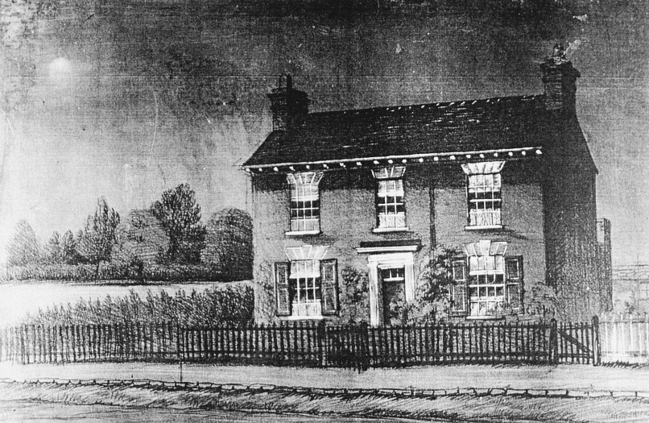
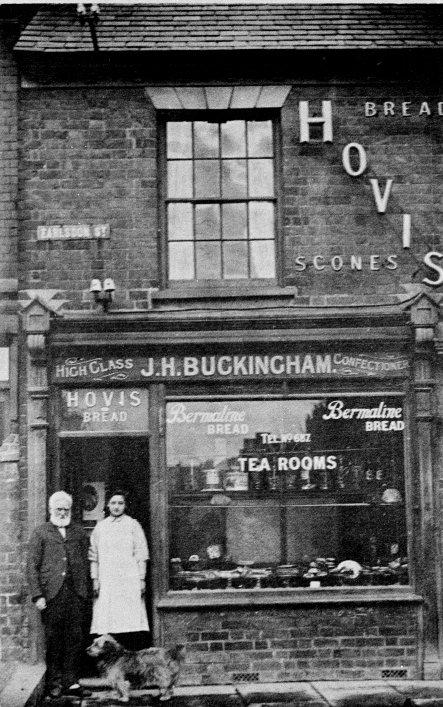

Henry Bates' Cottage Henry Bates Cottage is one of Earlsdon's oldest buildings, the third to be built in Earlsdon Street, and is now occupied by Kendall's Delicatessen. Henry Bates, who had the house built in 1852, was the son of a Kenilworth gardener. He attended Fairfax Charity School and was apprenticed to John Howe, a Silk Dyer. He married a ribbon weaver and settled in Spon Street with his wife and three children. The living conditions in Spon End were very poor and Bates was one of the first buyers of plots on the newly laid out Earlsdon Street. As soon as it was available he bought plot 151 for £25 8s 8d and took out a mortgage of £100 to build his house. It was a double fronted cottage with a neat front garden and a good back garden. It had a parlour, kitchen and two bedrooms which the Bates furnished modestly but comfortably. Sadly Henry died in 1859 but his widow remained in the cottage until her death in 1870. An auction of contents was held there on March 20 1871 and included such items as a mahogany Pembroke table, six mahogany chairs and a couch, a tent bedstead with white dimity hangings, dressing table and washstand, carpets, engravings, a handsome case of preserved birds, a dulcimer and so on. The house itself was sold to William Thompson for £130. Thompson however didn't live there as he had bought it as an investment and over the years he let it to various tenants including a a watchmaker, clerk and laundress. By 1903 it was still leasehold and let to Joseph Elliott. In 1907 the property was bought by James Buckingham, a baker, who had extensive bakehouses built at the rear. He also had two houses built next door, No 56 becoming Earlsdon Post Office, with Mr Buckingham as postmaster. With Mr Elliott still living upstairs and in the right side of the cottage Buckingham converted the left hand downstairs into a bakers and tiny cafe, but after Elliott died in 1930 the other side was also converted into a shop. This was occupied by Arthur Coopey, painter and decorator, but his business grew so rapidly that within a few years he had moved to bigger premises. The shop then became Mrs Gills Dress Shop.  Just before war broke out in 1939 the first floor was converted into a self contained flat occupied by the same family from 1940-1975 (the Daniels). The building was recently restored and is now not only a delicatessen but also a cafe once again. |